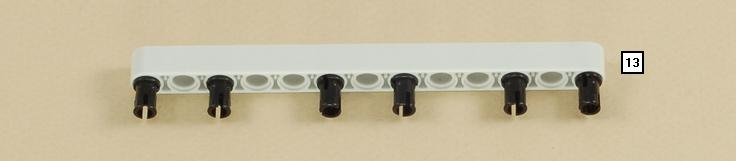
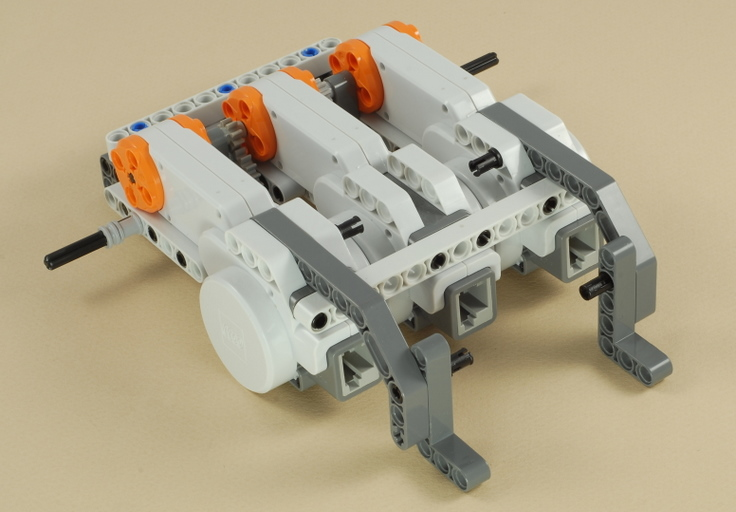
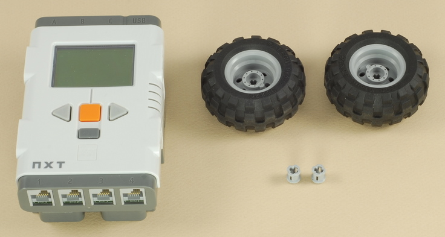
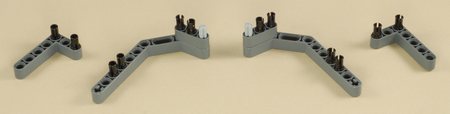
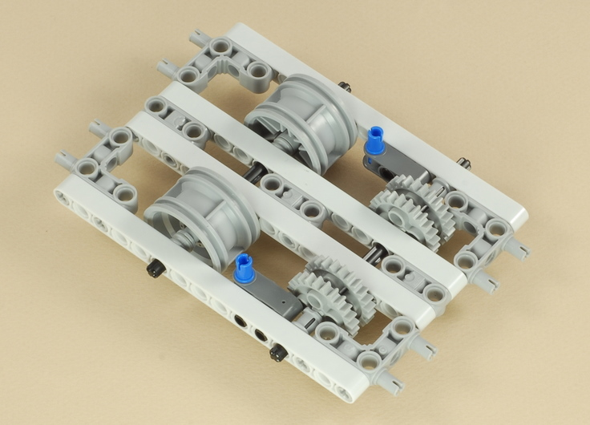

Fun Projects for your LEGO® MINDSTORMS® NXT!
|
|
Fun Projects for your LEGO® MINDSTORMS® NXT! |
| Trailer Pull |
|

1
2
3
4

5

| Note: You will need to rotate the orange
rotors of the motors until the axle holes line up so that you can insert
the axles from the side motors.
Important: Make sure that the size 6 axles (with the small gears on them) that go through the motors are pushed all the way in and don't stick out the sides. |
6

7

8
| Attach the short wire to the center motor and the two medium wires to the side motors. |
9
| Important: Make sure all three wires are coming out the top as shown below. |
10
11

| Attach the NXT to the two blue pegs on the base, then plug the center motor wire into port A on the NXT. |
| Then plug the two side motor wires into ports B and C on the NXT (doesn't matter which is which). |
| Then attach the wheels and secure them with bushings. |
12

13

| Important: Make sure that the gears and bushings are not pushed too tightly onto the axles. The axles should be able to spin freely. |
14

15

16
17
18
19
20
| This step builds the optional rear trailer fence (useful for holding loads on a slope) and the optional flexible trailer hitch. |
| Note: Long (3M) pegs would be better for the four outside pegs on the 13-beam here, but I ran out of them in the standard part count. If you have any extras you can use them instead. This will make the fence easier to attach and remove because the pegs will stay with the fence instead of sticking in the trailer. |
|
Trailer Tow Programming The Trailer_Pull program is a simple program to make the tow vehicle pull forward with all three motors and full power. It will run until you abort it with the dark gray button on the NXT. The Trailer_Push is the same thing except that the vehicle will drive in reverse, in case you want to try pushing the trailer. |
Towing Options
| Flexible Hitch | Rigid Hitch |
| Use the Rear Fence for loads that will fit. | Remove the Rear Fence for very large loads. |
|
Challenges
|
|
Copyright
©
2007-2009 by Dave Parker. All rights reserved. |